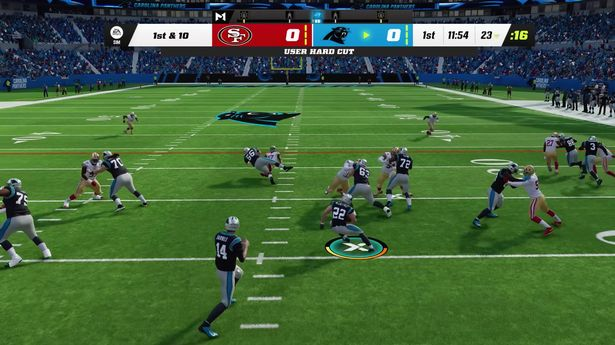
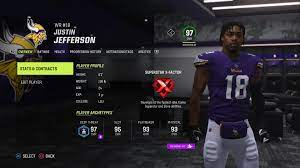
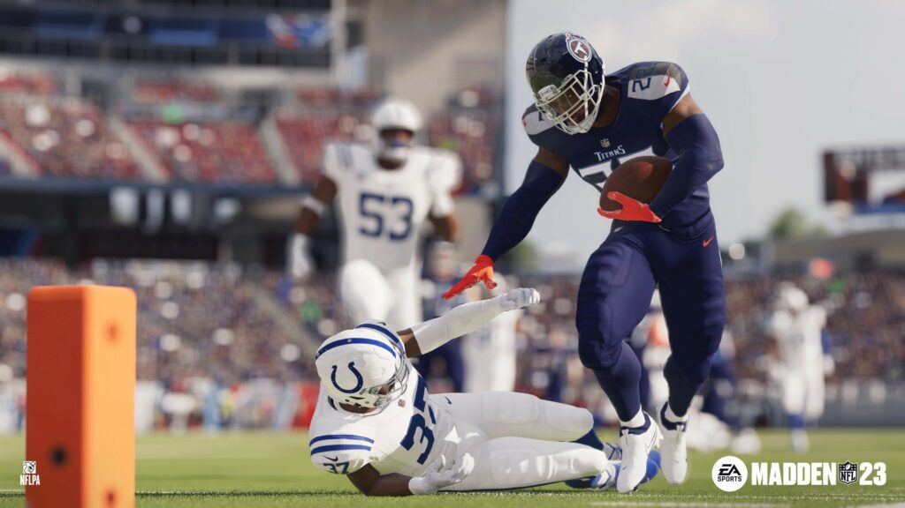

Price: $49.99
Release Date: 08/19/2022
Age Rating: E
Madden NFL 23 is an American football video game based on the National
Football League such as the (NFL), developed by EA Tiburon and published
by Electronic Arts. It is an installment of the long-running Madden NFL
series. Former head coach and broadcaster John Madden, whom the game was
named after, is the cover star in honor of his death in December 2021.
The franchise mode featured new additions, including free agency tools
and additional trade factors. The PS5 and Xbox Series X/S versions of
the game included new defensive animations, including mid-air collisions
and tackle assists, as well as a more precise passing mechanic on
offense. The game also features player-locked touchdown camera views,
additional player silhouettes body types, and improved stadium details.

The John Madden Legacy Game mode was created to honor the late John
Madden and featured the AFC and NFC teams, just like in the annual NFL
Pro Bowl game, at the Oakland Coliseum (known in-game as "The
Coliseum"), the site of the Oakland Raiders in the 1970s, featuring
Madden's favorite players from the past and present, along with two
versions of John Madden coaching both teams, respectively, a halftime
tribute to John Madden himself, narrated by long time Raiders fan, Tre
Mosley. Various quotes from John Madden are also heard in the
background, as well as on the video board.
